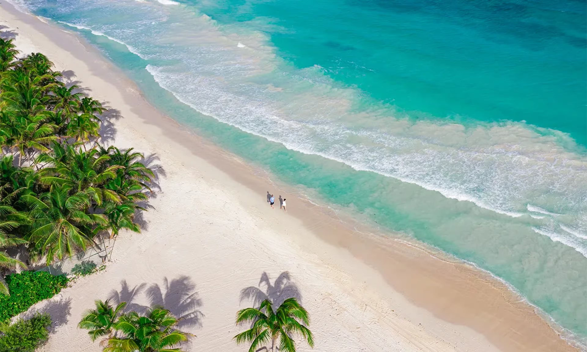
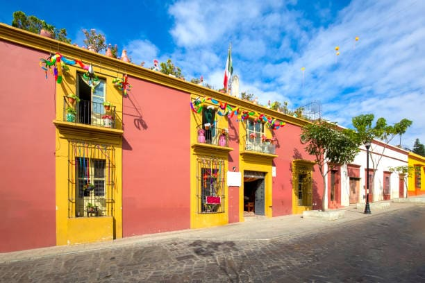
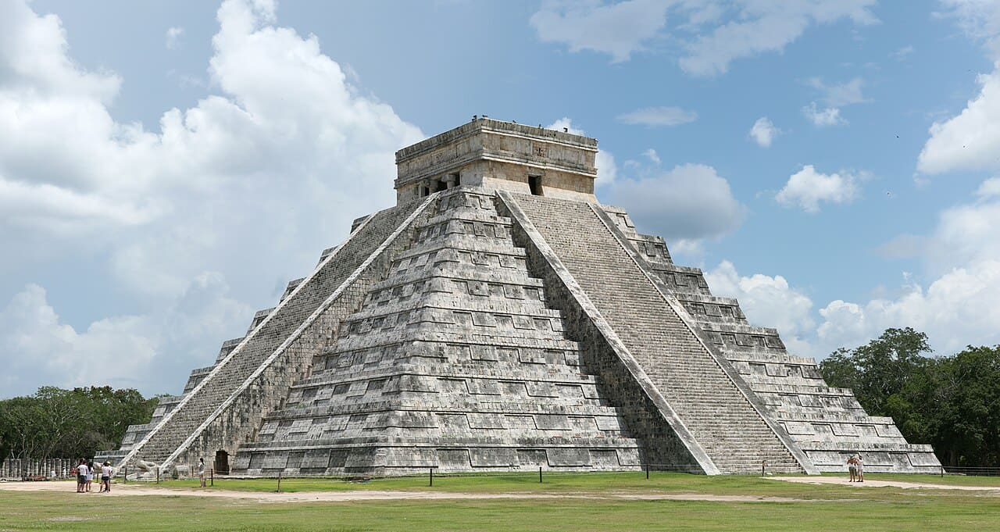

Mexico - Land of Culture, History, and Natural Beauty

Introduction
Mexico is a vibrant country known for its rich history, colorful culture, and stunning landscapes. From ancient ruins to modern cities and tropical beaches, Mexico offers travelers a wide array of experiences.
Visitors can explore Mexico City's historic center, the Mayan ruins of Chichen Itza, the colonial charm of Oaxaca, and the beaches of Cancun and Playa del Carmen. Mexican cuisine, music, and festivals add to the country’s lively atmosphere.
Quick Facts
- Capital: Mexico City
- Population: Approximately 126 million
- Language: Spanish
- Currency: Mexican Peso (MXN)
- Best Time to Visit: November to April (dry season)
Explore Major Destinations
Jump to a specific destination
\r\n
Mexico City
Region: Central Mexico
Mexico City is the vibrant capital and cultural heart of the country. It offers historic architecture, bustling markets, museums, and a dynamic culinary scene.
Visit the Zocalo, Frida Kahlo Museum, Chapultepec Park, and the National Museum of Anthropology. The city is full of colorful neighborhoods, traditional markets, and lively cultural events.
Must-See Attractions
- Zocalo - The main square with historic buildings
- Chapultepec Park - Large urban park with museums and zoo
- Frida Kahlo Museum - Home of the famous artist
- National Museum of Anthropology - Extensive exhibits on Mexican history
- Palacio de Bellas Artes - Cultural center with murals and performances
Back to top
Cancun

Region: Yucatán Peninsula
Cancun is famous for its pristine beaches, crystal-clear waters, and vibrant nightlife. It is a top destination for relaxation, water sports, and luxury resorts.
Enjoy snorkeling, scuba diving, and exploring nearby islands. Cancun also offers historical excursions to Mayan ruins and eco-parks.
Must-See Attractions
- Beaches of Cancun - White sand and turquoise waters
- Isla Mujeres - Island with snorkeling and dolphin encounters
- Cenotes - Natural sinkholes for swimming
- Xcaret Park - Eco-archaeological park
- Nightlife - Clubs and entertainment along the Hotel Zone
Back to top
Oaxaca

Region: Southern Mexico
Oaxaca is known for its colonial architecture, vibrant markets, indigenous culture, and cuisine. The city is rich in traditions and festivals, making it a cultural hub.
Explore the historic city center, visit the Zapotec ruins of Monte Albán, and taste traditional dishes like mole and tlayudas. Oaxaca is especially lively during the Day of the Dead celebrations.
Must-See Attractions
- Monte Albán - Ancient Zapotec archaeological site
- Oaxaca City Center - Colonial streets and churches
- Markets - Handicrafts, textiles, and local foods
- Santo Domingo Church - Beautiful baroque architecture
- Day of the Dead Festivities - Traditional celebrations and altars
Back to top
Chichen Itza

Region: Yucatán Peninsula
Chichen Itza is one of the most famous Mayan archaeological sites in Mexico. It features the iconic El Castillo pyramid and other historic structures.
Explore the Temple of the Warriors, the Great Ball Court, and other ruins. Chichen Itza is a UNESCO World Heritage Site and a must-see for history enthusiasts.
Must-See Attractions
- El Castillo - The main pyramid and iconic landmark
- Temple of the Warriors - Stunning carvings and architecture
- Great Ball Court - Ancient ceremonial ball game site
- Cenote Sagrado - Sacred natural sinkhole
- Observatory (El Caracol) - Mayan astronomical structure
Back to top
Travel Tips for Mexico
Here are some essential tips for traveling in Mexico.
- Transport: Buses and domestic flights are convenient; car rentals recommended for rural areas.
- Currency: Mexican Peso (MXN); credit cards accepted in cities, cash preferred in smaller towns.
- Safety: Stay in well-populated areas, avoid risky neighborhoods, and follow local advice.
- Health: Use bottled water, sunscreen, and mosquito repellent; travel insurance recommended.
- Culture: Respect local traditions, festivals, and religious customs; learn basic Spanish phrases.
← Back to North America Home